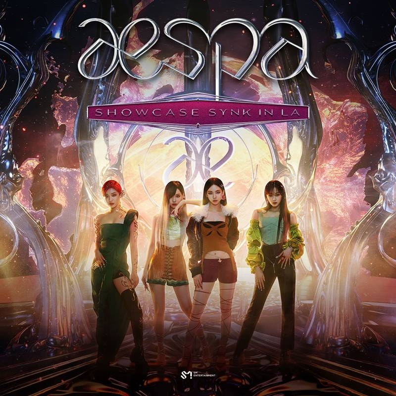

SM Entertainment Denies That Demo Of aespa’s Upcoming Song Was Leaked

(June 24, 2022)
June 14, SM Entertainment denied rumors regarding aespa’s upcoming release.
Recently, an audio clip spread on online communities with the claim that it is an English demo of aespa’s
new song “Girls.” The posts also added that producer Yoo Young Jin participated in making
the song. ...
In response to this, a representative of SM Entertainment commented, “The relevant demo is
not aespa’s new song.”
aespa made their debut in November 2020 with “Black Mamba,” and they followed up with the hit tracks
“Next Level” and “Savage.” Earlier this month, aespa confirmed their comeback with their second mini
album “Girls.” The album already surpassed 1 million stock pre-orders,
setting a new personal best for the girl group.
Before aespa’s second mini album “Girls” drops on July 8, the group will be pre-releasing their
English-language single “Life’s Too Short” on June 24.
Source: [1] [2]
Watch: aespa Surprises Fans By Dropping Pre-Release Track “Illusion” + Is Chosen As Apple Music’s “Up Next” Artist For June
(June 1, 2022)
aespa’s long-awaited comeback announcement wasn’t the only surprise in store for MY today!
On June 1, aespa announced that they would be making their highly-anticipated return this July with
their second mini album “Girls.” Later that morning, SM Entertainment also revealed that aespa had
signed a partnership with Warner Records and would be ...
pre-releasing their English-language single “Life’s Too Short”—which they
first performed at Coachella back in April—on June 24.
However, more excitement was still to come: that same afternoon, aespa unexpectedly released
a brand-new song entitled “Illusion” from their upcoming mini album.
At the same time, Apple Music officially announced that aespa was their
“Up Next” artist for June, making aespa only the second Asian artist after NCT 127
ever to be selected for the title.
Check out aespa’s new lyric video for their surprise pre-release track “Illusion” below!
aespa 에스파 '도깨비불 (Illusion)' Lyric Video
Source: [1] [2]
aespa's Giselle donates 10 million KRW to help abandoned animals
(June 4, 2022)
Giselle, a member of the girl group aespa recently made a generous donation to a non-profit
organization by the name 'Yuhengsa' (translated to people who seek happiness for abandoned animals)
On June 3, they took to their official Instagram account to speak about the...
donation and thank Giselle for her kindness. They shared that
an unknown individual deposited 10 million won (about Rs. 6,20,000 in Indian money) to their
account a few days ago, later getting to know that it was from Giselle.
In the caption, Yuhengsa wrote, “A few days ago, 10,000,000 KRW was deposited into
Yuhengsa's account anonymously. It turns out the sponsor was Aespa’s Giselle.”
“Giselle, who has always been very interested in the issue of abandoned animals, said that
she continued to watch Yuhengsa’s Instagram with interest, and she made such a generous move by
sending such a large amount of donation!”
They thanked her saying, “Thank you so much for accompanying us on the path to finding
happiness for abandoned animals. We’ll continue to watch and support you. Please also show
a lot of support to Yuhengsa that finds happiness for abandoned animals!”
Source: [1] [2]
{kind=link}
Aespa to hold showcase in LA

(June 7, 2022)
K-pop girl group Aespa is heading to Los Angeles to hold a showcase.
The group will hold the “Aespa Showcase SYNK in LA” at the Los Angeles YouTube
Theater in Inglewood, California on June 26....
During the showcase, Aespa will perform hit and new songs, and will
communicate with fans through talks and games.
After LA, Aespa will hold the “Aespa Japan Premium Showcase 2022-SYNK” on
Aug. 6 and 7 at the Pia Arena MM in Yokohama, Japan.
Aespa will be dropping their second mini-album “Girls” on July 8. Ahead of
the album’s release, Aespa will release the English single “Life’s Too Short” on June 24.
Last month, Time magazine included Aespa, composed of Giselle, Karina, Ningning,
and Winter, as one of its 2022 Next Generation Leaders, which showcased
“young people from across fields and around the globe who are working to build a better world.”
Besides Aespa, those in the list were Olga Rudenko, Ukraine; Maximilian Davis, United Kingdom;
Jonathan Bailey, United Kingdom; Deepica Mutyala, United States; CKay, Nigeria; Jaz Brisack,
United States; Bilal Baig, Canada; Rinzin Phunjok Lama, Nepal; and Bolor-Erdene Battsengel, Mongolia.
In April, Aespa made their debut US live performance at the
Coachella Valley Music and Arts Festival in Indio, California.
“This is actually our very first time performing in such…in front of such a
large audience and we are so happy to be here and we are ready to party,” Giselle told the audience.
Source: [1]
Fans and netizens are adoring aespa Winter's pigtails
(May 29, 2022)
aespa has now firmly placed itself as one of the most popular 4th generation girl groups after
making their entrance into the music industry on November 17, 2020. All the members have been
praised for their visuals and performance skills as they have stolen the hearts of fans from all
over the globe....
Winter has been receiving much love as a member of this popular girl group and has garnered a
hefty number of fans herself.
Recently, Winter has gained attention with her adorable hairstyle at one of the college festivals. Aespa
performed at the Hanyang University college festival recently, and various footage of the
group was shared online.
All the members received immense love from fans. In particular, fans are adoring Winter's pigtails
and her cuteness during the performance.
{kind=link}
{kind=link}
{kind=link}
{kind=link}
{kind=link}
{kind=link}
Netizens commented, "Winter is so adorable with that hair," "Winter should always have pigtails," "I love Winter, she's so cute," "This hair on her is legendary," "Personally, I love this hairstyle on her the best," "She looks like a fairy," "She's so pretty," "Her hair is perfect for the college festival," "She's so cute," "She's so pretty that I'm so envious she looks good with that hair," "Her hair, the way it's tied, and her outfit are all perfect," "She's so adorable," and "I like Winter with this hairstyle the best."
Source: [1]
SM Entertainment’s GOT the beat members, BoA and aespa’s Karina slammed over colorist remarks
(February 12, 2022)
In a video released online, BoA is seen making a colorist joke on Girls’ Generation’s Hyoyeon’s past
tanned skin while aespa’s Karina’s laughed hysterically...
It seems like some K-pop idols just don’t understand the term ‘watch and learn’ as more artists from
SM Entertainment are called out for their insensitive remarks about dark skin color. First,
it was Aespa's (Stylized as aespa) Giselle who was slammed by fans for her lip-syncing
the N-word on purpose and now it is Karina, another member of aespa, who is being called out by
fans for her insensitive reaction to colorist remarks alongside mature idols like BoA and Hyoyeon.
The newest girl group project from the label titled, Girls On Top (also known as GOT, in short) comprising
of famous female idols from SM Entertainment is now facing heavy backlash online after member BoA’s
colorist remark and aespa’s Karina’s overly exaggerated reaction to it.
With SM Entertainment launching their first female supergroup composed of other idols from the label,
Girls On Top’s first subunit named GOT the beat consisting of members namely BoA, Taeyeon and
Hyoyeon of Girls’ Generation, Seulgi and Wendy of Red Velvet, and Karina and Winter of aespa
that dropped their first single, ‘Step Back’ early in January this year and are currently promoting
the same. Just as they do so, members BoA, Hyoyeon, and Karina have now found themselves in some
hot water with K-pop fans who are calling out their colorist remarks on Twitter.
Source: [1] [2]